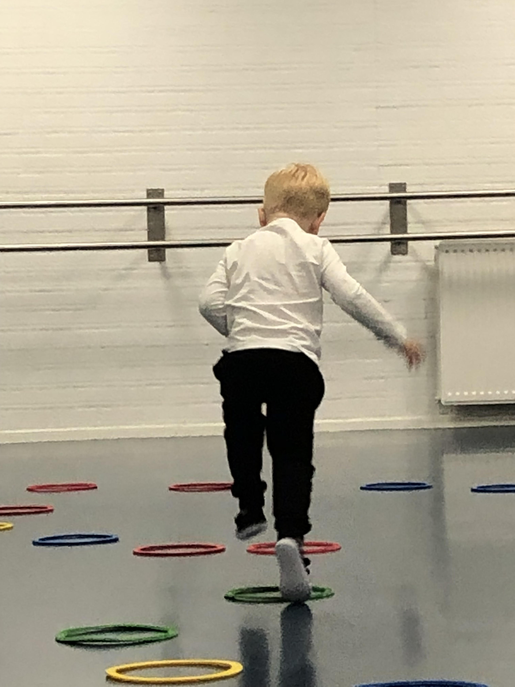
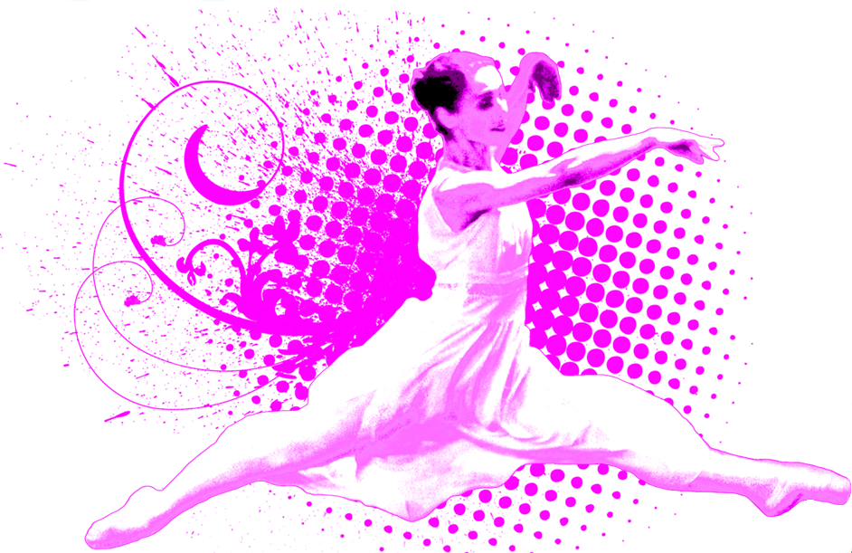

Dansplezier
Plezier in dansen is er voor groot en klein. Wij delen de liefde voor dans met jullie. .JPG) Wil je dit zelf ervaren? Instromen is zeker nog mogelijk. Kom vrijblijvend een proefles doen. Stuur een mail voor het aanvragen van een proefles contact
Wil je dit zelf ervaren? Instromen is zeker nog mogelijk. Kom vrijblijvend een proefles doen. Stuur een mail voor het aanvragen van een proefles contact
Inschrijven voor seizoen 25-26:

Info brieven:
 De informatie brieven zijn weer verstuurd in September en November. Heb je er een gemist? Stuur mij een mail: babs@babsballetschool.nl
De informatie brieven zijn weer verstuurd in September en November. Heb je er een gemist? Stuur mij een mail: babs@babsballetschool.nl
Peuterdans
 vanaf 29 september starten we weer een nieuwe cursus Peuterdans. Kom dansen met je kindje of kleinkindje en ervaar samen dansplezier! Cursus duurt 11 weken. (m.u.v. schoolvakanties). Mail: babs@babsballetschool.nl
Ballet Volwassenen Intermediate
 Op maandagochtend is er een nieuwe les ballet voor volwassenen, dit is een les voor dansers die al wat balletervaring hebben. Aanmelden kan via de mail: babs@babsballetschool.nl
Pilates op mat
 Pilates bestaat uit een serie oefeningen die je op een mat kunt uitvoeren.
Er zijn ontzettend veel Pilates oefeningen die elk lichaamsdeel kunnen trainen, maar uiteindelijk draait alles om je core (buikspieren).
Met Pilates verbeter je jouw kracht, flexibiliteit, houding en balans.
Schrijf je nu in voor de nieuwe lessen Pilates.
Pilates bestaat uit een serie oefeningen die je op een mat kunt uitvoeren.
Er zijn ontzettend veel Pilates oefeningen die elk lichaamsdeel kunnen trainen, maar uiteindelijk draait alles om je core (buikspieren).
Met Pilates verbeter je jouw kracht, flexibiliteit, houding en balans.
Schrijf je nu in voor de nieuwe lessen Pilates.
Dansrooster & jaarplanning
Rooster seizoen 25/26

Ballet Spelletje Balletris
 Typ deze code in op je toetsenbord: ⬆⬆⬇⬇⬅➡⬅➡ ba
Typ deze code in op je toetsenbord: ⬆⬆⬇⬇⬅➡⬅➡ ba
Floor of Fame
 Onze vloer is een feit met dank aan alle lieve dansers, fans en de sponsor Go Cybersafe.
Onze vloer is een feit met dank aan alle lieve dansers, fans en de sponsor Go Cybersafe.
{kind=link}